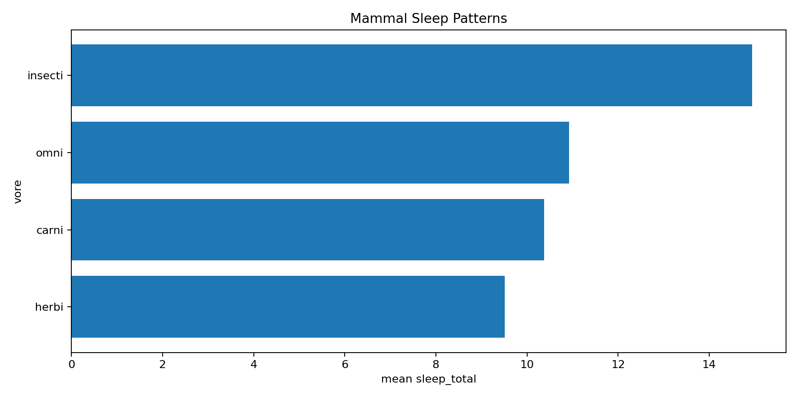

How does recorded sleep differ by feeding category?
The largest observed mean sleep_total is 14.940 for insecti. This ranking is descriptive, not a recommendation.

| segment | rows_used | metric | minimum | maximum |
|---|---|---|---|---|
| carni | 19 | 10.378947 | 2.7 | 19.4 |
| herbi | 32 | 9.509375 | 1.9 | 16.6 |
| insecti | 5 | 14.940000 | 8.4 | 19.9 |
| omni | 20 | 10.925000 | 8.0 | 18.0 |
Species are not independent random samples; missing feeding labels are excluded.
Check sample sizes and phylogenetic dependence before scientific inference.